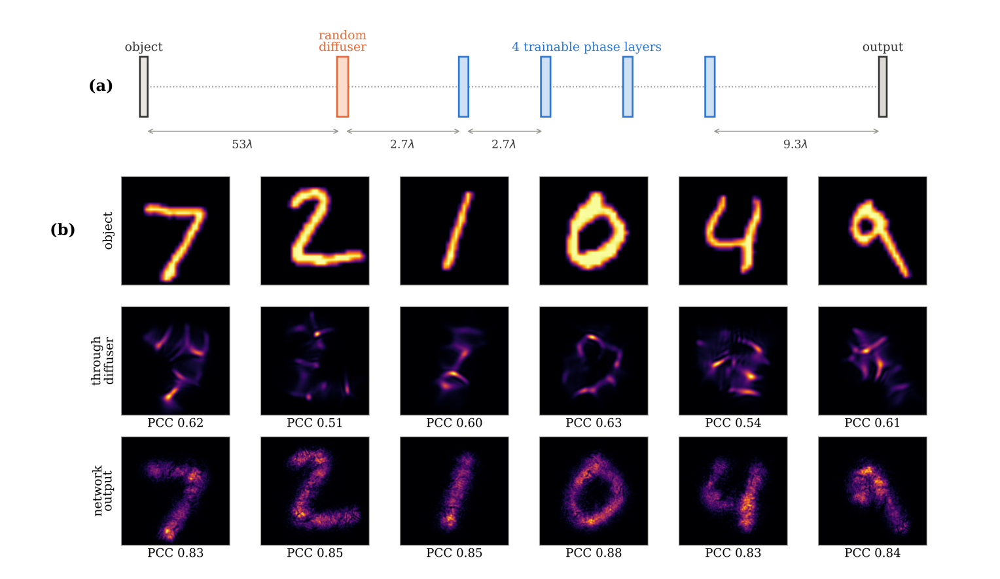
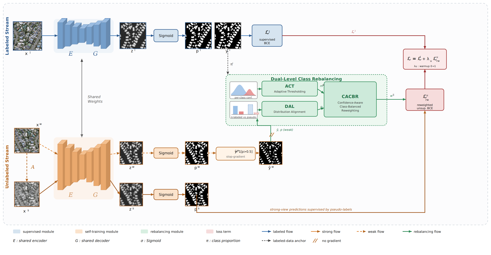
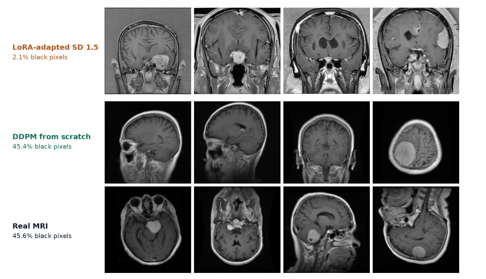
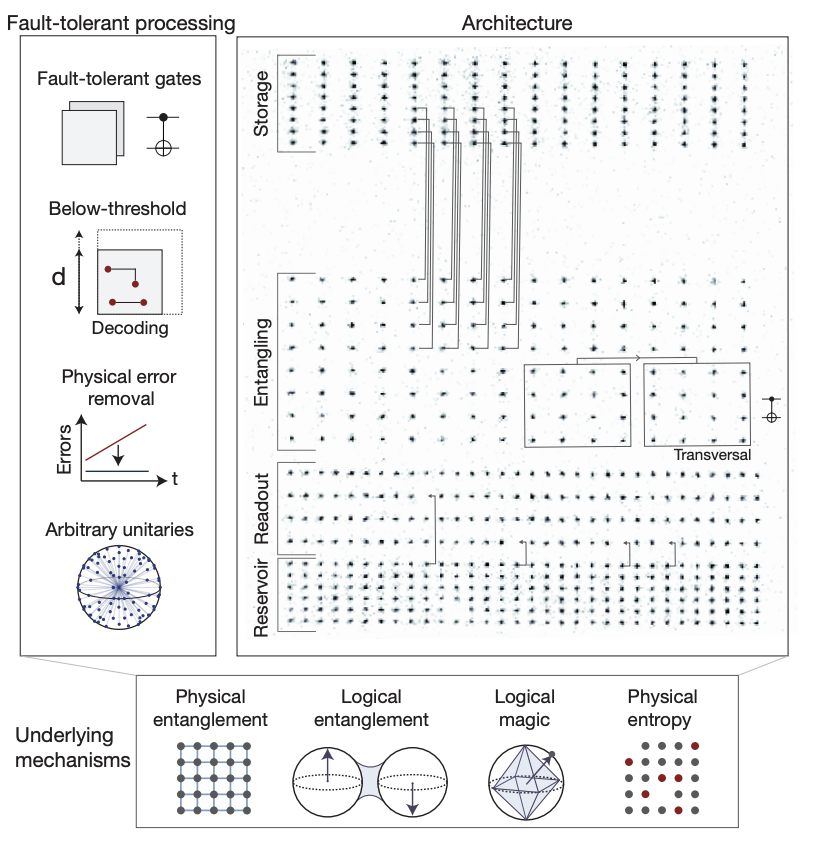
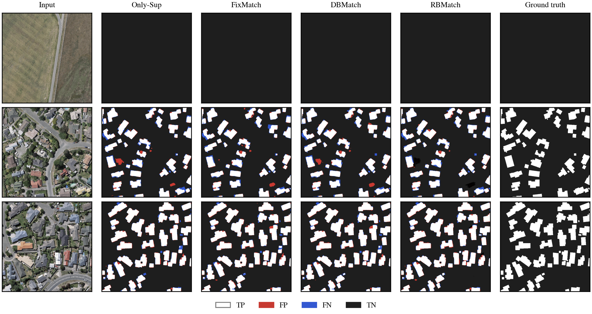
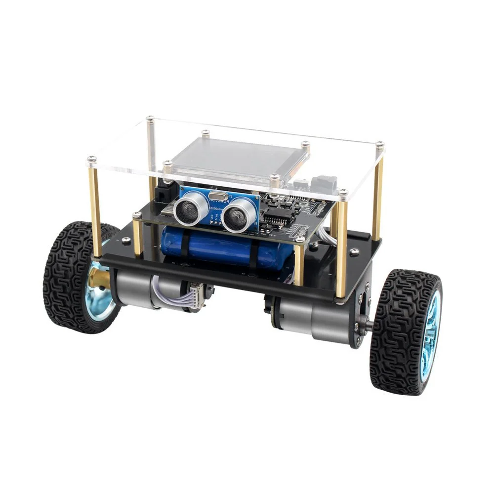

Journal articles, conference papers, preprints, and manuscripts under review. See Google Scholar for the complete list.

A. A. Taki, S. A. Fattah, M. Saquib
Under review at IEEE ICASSP 2027
A. A. Taki, W. Aspen, F. Suya
Under review
M. A. M. Chowdhury, M. R. U. Rahman, A. A. Taki
CVPR Findings, 2026

A. A. Taki, S. A. Fattah
Under review at IEEE Geoscience and Remote Sensing Letters (GRSL)

A. A. Taki, M. I. H. Bhuiyan
Under review at ICCIT 2026

arXiv preprint, 2026

A. A. Taki, M. R. U. Rahman, M. I. H. Bhuiyan
International Journal of Advances in Signal and Image Sciences
K. H. Nahin, J. H. Nirob, A. A. Taki, M. A. Haque, N. S. S. Singh, L. C. Paul, et al.
Scientific Reports, 15(1), 4215, 2025
M. A. Haque, M. K. Ahmed, A. A. Taki, G. Alyami, et al.
Results in Engineering, 27, 105882, 2025
M. T. Islam, A. A. Taki, S. A. Fattah
6th ICEEICT, Dhaka, pp. 1384–1389, 2024

M. M. I. Muhiuddin, A. A. Taki, K. Zahin, M. J. Karim, S. M. Al Kais
IEEE 3rd RAAICON, Dhaka, pp. 91–95, 2024
arXiv preprint, 2024